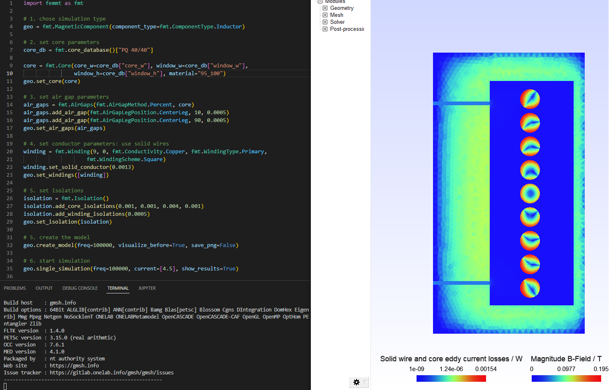
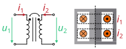

FEM Magnetics Toolbox (FEMMT)
Python toolbox to generate preconfigured figures for FEM simulation tools in power electronics.
The toolbox contains two parts, a reluctance module and a FEM module.
The reluctance module is for pre-calculations
The FEM module is for detailed calculations
Installation
To run FEMMT, python (version 3.8 or above) and onelab is needed.
ONELAB installation
Go to https://onelab.info/
Download the Desktop Version for your OS (Windows, Linux or macOS)
Unpack the software and remember the file path. This will be needed later when installing FEMMT.
Install FEMMT
FEMMT can be installed using the python pip package manager. Either a release version can be installed using pip or a developement version by downloading this repository.
FEMMT release version (recommended)
This installs the stable release version.
pip install femmt
FEMMT development version (for developers only)
This is the latest development version with the latest features. Note: You may need to install git. Also have a look at the developers notes.
cd /Documents/Folder/of/Interest/FEMMT
git clone git@github.com:upb-lea/FEM_Magnetics_Toolbox.git
pip install -e .
FEMMT is using the material database. To use the latest version for developing, also install the material database in developer mode.
cd /Documents/Folder/of/Interest/materialdatabase
git clone git@github.com:upb-lea/materialdatabase.git
pip install -e .
Examples
This toolbox is able to build a complete FEM simulation from simple Python code. The following figure shows the Python code on the left and the corresponding FEM simulation on the right. 
Code examples can be found in this example file. This file is updated regulary.
Basics
The magnetic component can be an inductor, a transformer, or a transformer with integrated stray path. The parameterization process is divided into the following steps:
Chose simulation type,
set core parameters (geometry, material),
set air gap parameters (position, height),
set conductor parameters (litz/solid wire),
start simulation with given frequencies and currents and phases.
Please have a look at the basic_example.
The examples contain among other things:
Geometries: Coil, transformer, transformer with integrated stray path,
wire and stranded wire definition,
air gaps definition,
excitation with different frequencies, amplitudes and phases.
The simulation results can be found in working_directory/results/result_log_electro_magnetic.json. Working directory can either be set by the user otherwise it located at /python-side-packages-path/femmt. In it you can find
power loss in the core: hysteresis losses and eddy current losses,
losses per winding and for each individual winding,
self- and mutual inductances.
For a more detailed guide on how to create a model, plase have a look here.
Counting arrow system
Defined as depicted here:

GUI (Experimental)
There is a first preview for a GUI. Installing this is a bit cumbersome at first, but will be simplified in the future:
Download the complete repository via
Code->Download ZIPand unpack it.install the development version of femmt as described above
run python
downloads/path-to_femmt/femmt/gui/femmt_gui.py
Please note, the GUI is experimental.

FEMM Validation (for developers only)
For verification purposes a FEMM model can be created in FEMMT. To do this FEMM needs to be installed as well as the FEMM python package. The functionality is limited, e.g. the air gaps are limited to the ‘center’-type. Other types, like ‘percent’ are not implemented.